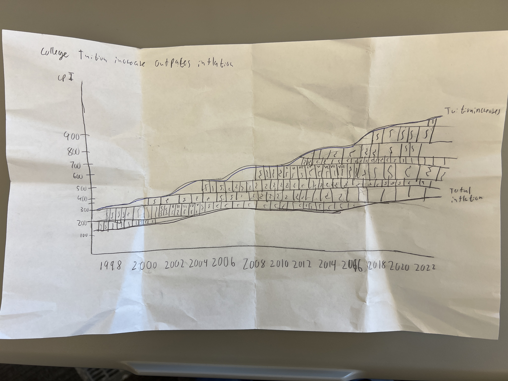

The relative cost of going to college has reached an all-time high
In an analysis of inflation data provided by the U.S. Bureau of Labor Statistics, a glorious Syracuse University journalism student found that the relative cost of attending college has quickly outpaced inflation.
The data looks at the consumer price index, an economic indicator of inflation and cost of living, and the consumer price index of just tuition. The data indicates that inflation outpaces the rise of college tuition and fees 77.58%. One flaw of the data is that the creator decided to use nonseasonally adjusted data which accounts for the swooping behavior of the trend line leading to a less-visually appearing graph.
In the brilliantly illustrated image below, the same graph can be seen as the increasing bookshelf highlights the rising difference in inflation and the rise of college tuition and fees.
